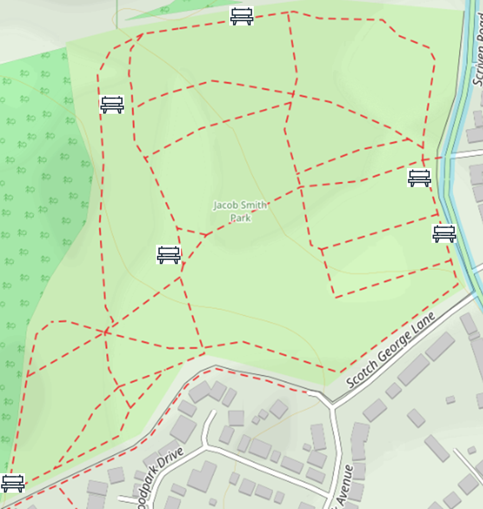

What to Enjoy in Jacob Smith Park
JSP is a precious green space close to the centre of Knaresborough. It's a great spot for walking, getting closer to nature, enjoying the views, spending time with friends or just relaxing and watching the world go by.
Inside JSP
The park is a managed wild space with a network of paths criss-crossing its 30 acres and has a perimeter walk covering approximately three quarters of a mile. Some of the paths involve steeper climbs but these can be avoided by using other paths.

Paths and seating locations within Jacob Smith Park.
Getting Here
By Car
Street parking nearby. Please park considerately and respect residents.
On Foot
Accessible from surrounding streets in Scriven. The park entrance is clearly signposted.
Nearest Facilities
The nearest toilet facilities are at Conyngham Hall, approximately a 20-minute walk or 5-minute drive.
Conyngham Hall, Knaresborough HG5 9AY